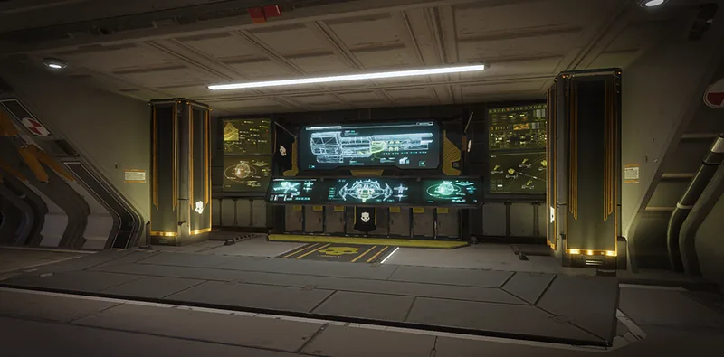

高级装填法

“授权开展为期8周的高级装填法（SPM）船员培训课程，从而提高补给箱容量。
— 舰船管理终端
卓越封装方法 是4级 舰船模块 升级 for the 爱国行政中心.
升级效果
补给型战略配备 补给箱重新装满 支援武器 携带最大数量的可携带弹匣。
- Without this module 升级, the 补给箱 will only refill ~50-百分比 of the 支援武器 ammunition.
- Only resupplies called by 绝地潜兵 who have purchased this 升级 will 受益 from it, although 绝地潜兵 without the 升级 still 接收 the additional ammunition from the 重新补给 boxes called by a 绝地潜兵 with the 升级. It can be beneficial to let 绝地潜兵 who have the 升级 call down resupplies for 最大 支援武器 ammunition.
- Supply packs in the B-1 补给背包 战略配备 are not affected by this 舰船模块 升级.
要求
- Hand Carts
 150 Common Sample
150 Common Sample 150 Rare Sample
150 Rare Sample 15 Super Sample
15 Super Sample 20,000 申购点 Slips
20,000 申购点 Slips
受影响的战略配备
效果
| 支援武器 | 无SPM重新补给 | 有SPM重新补给 | %变化 |
|---|---|---|---|
| SG-88 Break-Action 霰弹枪 | 20 | 40 | 100 |
| MG-43 机枪 | 2 | 3 | 50 |
| APW-1 反器材步枪 | 4 | 8 | 100 |
| M-105 盟友 | 2 | 3 | 50 |
| GR-8 无后坐力炮 | 3 | 5 | ~66.67 |
| FLAM-40 火焰喷射器 | 4 | 4 | 0 |
| AC-8 机炮 | 5 | 10 | 100 |
| MG-206 重机枪 | 2 | 2 | 0 |
| RL-77 空爆火箭弹发射器 | 3 | 5 | ~66.67 |
| RS-422 磁轨炮 | 10 | 20 | 100 |
| FAF-14 Spear | 2 | 3 | 50 |
| GL-21 榴弹发射器 | 2 | 2 | 0 |
| LAS-98 激光大炮 | 1 | 1 | 0 |
变更历史
补丁
描述
1.000.403
2024-07-01
(Mid-补丁)
修复
- 修复 the ‘卓越封装方法’ 舰船模块 升级.
1.000.400
2024-06-13
修复
- Fixed 卓越封装方法 not working for other peers.
1.000.300
2024-04-29
修复
- Fixed 卓越封装方法 舰船模块 not working properly.
1.000.202
2024-04-11
(Mid-补丁)
Addition
- 已加入游戏。